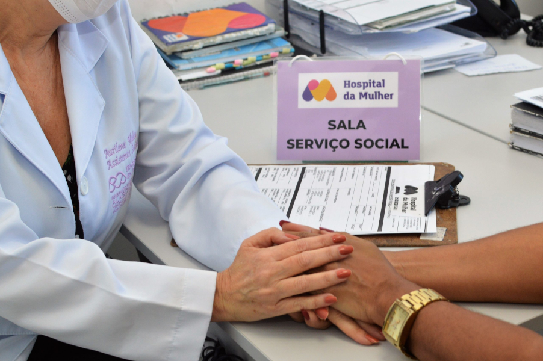

ALESSANDRA YASMIM

Carreira desenvolvida na área de Serviço Social, com experiência no atendimento de grupos, comunidades em estado de vulnerabilidade, envolvendo-se em programas sociais e no desenvolvimento de campanhas de alimentação, saúde, educação, entre outros projetos públicos direcionados a garantia do bem-estar coletivo.
EXPERIÊNCIA PROFISSIONAL:

12/2021 Até o momento: PRC SOLUÇÕES E SAÚDE EIRELI EPP
Empresa de Saúde porte de segmento de Gestão Hospitalar.
Cargo: Assistente Social
▪ Experiência na orientação de indivíduos, famílias e instituições sobre os seus direitos e deveres sociais, atuando na triagem, assistência e acompanhamento de casos até a sua finalização, agindo em conformidade às normas e diretrizes legais determinadas.
▪ Atuação em contexto de saúde, trabalhando na avaliação e suporte ao paciente. Participação na elaboração, gerenciamento e organização de políticas públicas da Unidade de Pronto Atendimento; orientação de indivíduos, famílias e instituições sobre os seus direitos e deveres sociais.
FORMAÇÃO ACADÊMICA:
Graduação em Serviço Social
- concluída em 2021
Universidade do Grande Rio - Unigranrio
Pós Graduação em Gestão de Saúde Pública
- concluída em 2024
Universidade Anhanguera
Pós Graduação em Meio Ambiente
– concluída em 2024
Universidade Anhanguera